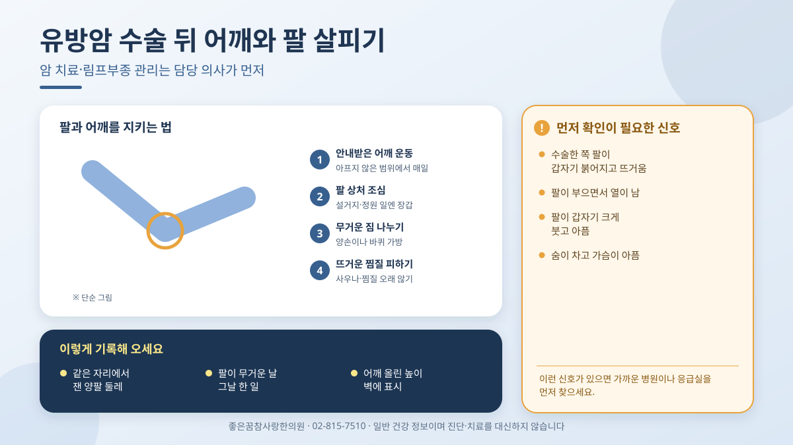

이종호 한의사 감수좋은꿈참사랑한의원 대표원장 (한의사 면허번호 19769)발행 2026-11-26 · 수정 2026-11-26
이 글의 차례
머리를 감으려고 팔을 들어 올리는데 어깨가 중간에서 걸립니다. 선반 위 그릇을 꺼내려다 겨드랑이 안쪽이 팽팽하게 당겨 멈춥니다. 저녁이 되면 수술한 쪽 팔이 묵직하고, 반지와 시계가 아침보다 조금 끼는 것 같아 자꾸 만져 보게 됩니다.
유방암 수술을 마친 분들께 이런 이야기를 자주 듣습니다. 큰 고비를 넘겼다는 안도감 뒤에, 일상에서 팔과 어깨가 예전 같지 않다는 낯선 불편이 찾아옵니다. 혹시 붓는 것은 아닌지, 이렇게 움직여도 되는지 걱정이 꼬리를 뭅니다.
먼저 분명히 말씀드립니다. 좋은꿈참사랑한의원은 암을 치료하는 곳이 아닙니다. 수술 뒤의 경과, 항암·방사선·호르몬 치료, 림프부종의 진단과 관리는 담당 외과·종양내과 선생님과 재활의학과가 이끄는 것이 순서입니다. 침이나 한약도 담당 선생님이 동의하신 경우에만 함께 상의합니다.
그 전제 위에서, 이 글은 수술 뒤 어깨가 굳는 이유와 림프부종이 무엇인지, 일상에서 팔을 어떻게 지키면 좋은지, 한의원에서는 어떤 범위에서 함께 살필 수 있는지를 정리했습니다.
수술 뒤 어깨가 굳는 이유는 무엇인가요
유방과 겨드랑이 수술 뒤에는 상처가 아무는 동안 그 주변 조직이 당기고 단단해집니다. 아픈 것이 두려워 팔을 덜 쓰게 되면 어깨 관절을 둘러싼 조직도 함께 굳어 팔이 올라가는 범위가 줄어듭니다.
겨드랑이 아래에서 팔 안쪽으로 줄처럼 팽팽한 것이 만져지는 분도 있습니다. 액와막 증후군이라고 부르기도 하는데, 팔을 펼 때 기타 줄처럼 당기는 느낌이 듭니다. 이런 변화는 재활의학과에서 운동 방법을 안내받으며 조금씩 풀어 가는 경우가 많습니다.
방사선 치료를 받으셨다면 가슴과 겨드랑이 피부와 그 아래 조직이 서서히 단단해지면서 어깨 움직임에 영향을 주기도 합니다. 수술한 쪽을 감싸듯 어깨를 앞으로 말고 지내는 자세도 목과 등의 뻐근함을 키웁니다.
왜 팔이 붓는 림프부종이 생길까요
림프관은 몸 구석구석의 남는 체액을 모아 심장 쪽으로 돌려보내는 가는 길입니다. 겨드랑이 림프절은 팔에서 오는 림프액이 지나가는 중요한 정류장입니다. 수술로 림프절을 떼어 내거나 방사선 치료를 받으면 이 길이 좁아져, 팔에 림프액이 고이며 붓는 림프부종이 생길 수 있습니다.
림프부종은 수술 직후에 오기도 하고, 몇 달이나 몇 년 뒤에 천천히 나타나기도 합니다. 처음에는 팔이 묵직하고 꽉 끼는 느낌, 반지나 소매가 끼는 정도로 시작하는 경우가 많습니다. 아침에는 덜하고 저녁에 더한 경우가 흔합니다.
모든 분께 생기는 것은 아니고, 떼어 낸 림프절의 수, 방사선 치료 여부, 체중, 팔에 생긴 상처나 염증 등에 따라 가능성이 달라집니다. 일찍 알아차릴수록 관리가 수월하다고 알려져 있어서, 작은 변화라도 담당 선생님이나 재활의학과에 알리시는 것이 좋습니다.
수술 뒤 붓기, 림프부종, 다른 붓기는 어떻게 다른가요
수술 직후 몇 주 동안은 상처 주변이 붓는 것이 흔합니다. 이 붓기는 상처가 아물며 대개 줄어듭니다. 림프부종은 이 시기가 지난 뒤에도 수술한 쪽 팔에만 붓기가 이어지거나 새로 생기는 경우를 말합니다.
양쪽 팔다리가 함께 붓는다면 심장, 콩팥, 갑상선, 드시는 약처럼 다른 이유를 먼저 생각합니다. 수술한 쪽 팔이 갑자기 붉고 뜨겁게 붓는 것은 림프부종과는 결이 다른 염증일 수 있어서, 아래 '먼저 확인이 필요한' 신호를 함께 봐 주세요.
집에서 살펴볼 것
거울 앞에서, 그리고 줄자로 한 달에 한 번 정도 아래를 확인해 보세요.
- 양쪽 손목, 팔꿈치 아래, 팔꿈치 위 같은 자리의 둘레를 줄자로 재기
- 수술한 쪽 반지, 시계, 소매가 반대쪽보다 끼는지
- 팔을 옆으로, 앞으로 들어 올릴 때 어디서 걸리는지
- 손등을 눌렀을 때 자국이 오래 남는지
- 팔이 무겁고 꽉 끼는 느낌이 저녁에 심해지는지
같은 자리를 같은 시간대에 재는 것이 중요합니다. 손목에서 몇 센티미터 위인지 표시해 두면 매번 같은 곳을 잴 수 있습니다.
옷과 속옷, 잠자리 자세
수술한 쪽 팔과 가슴을 꽉 조이는 옷은 림프 흐름을 막을 수 있어서, 소매 끝이나 팔목이 조이지 않는 넉넉한 옷이 편합니다. 속옷은 끈이 어깨를 파고들지 않는 넓은 끈, 와이어가 없는 부드러운 것을 고르시는 분이 많습니다. 보정 속옷이나 압박 소매는 재활의학과에서 안내받은 것을 쓰시면 됩니다.
잠잘 때는 수술한 쪽을 아래로 깔고 오래 눕는 자세가 불편할 수 있습니다. 바로 누워 수술한 쪽 팔 아래에 얇은 베개를 받쳐 손이 팔꿈치보다 조금 높게 오도록 하면 저녁의 묵직함이 한결 덜하다고 말씀하시는 분이 많습니다.
다시 일하고 운동할 때
치료를 마치고 일터로 돌아가거나 운동을 다시 시작할 때는 갑자기 많이 하기보다 조금씩 늘려 가는 것이 좋습니다. 무거운 서류 상자를 옮기거나 같은 팔 동작을 오래 반복하는 일은 중간중간 쉬며 팔을 심장보다 높이 올려 주세요.
걷기, 가벼운 근력 운동, 스트레칭은 담당 선생님과 재활의학과에서 괜찮다고 한 범위에서 하시면 됩니다. 운동 뒤 팔이 평소보다 무겁거나 둘레가 늘었다면 양을 줄이고, 기록해 두었다가 진료 때 말씀해 주세요.
몸의 변화를 받아들이는 시간
수술 뒤 거울 속 내 모습이 낯설게 느껴지는 것은 자연스러운 일입니다. 어깨가 굳고 팔이 무거운 날이 겹치면 마음까지 움츠러들기 쉽습니다. 그런 마음을 혼자 삼키지 마시고 가족이나 같은 경험을 한 분들과 나누어 보세요.
치료 병원마다 환우 모임이나 상담 프로그램이 있는 경우가 많습니다. 몸을 살피는 일만큼 마음을 살피는 일도 회복의 한 부분입니다. 힘든 마음을 말로 꺼내는 것만으로도 어깨에 들어간 힘이 조금 풀리는 경우가 많습니다. 진료실에서도 편하게 말씀해 주세요.
먼저 이렇게 여쭙니다
- 수술은 언제, 어느 병원에서 받으셨나요? 림프절 수술도 함께였나요?
- 항암, 방사선, 호르몬 치료를 받으셨거나 받고 계신가요?
- 팔이 붓는다고 느끼신 적이 있나요? 재활의학과 진료를 받으셨나요?
- 압박 소매나 운동 안내를 받으셨나요?
- 어깨는 어느 방향으로 올리기가 가장 힘드신가요?
- 침이나 한약에 대해 담당 선생님께 여쭤 보셨나요?
일상에서 먼저 해 볼 수 있는 것
수술한 쪽 팔은 아끼되, 쓰지 않는 것은 아닙니다. 담당 선생님과 재활의학과에서 안내받은 범위 안에서 꾸준히 움직이는 것이 어깨를 지키는 길입니다.
- 안내받은 어깨 운동을 하루 몇 번, 아프지 않은 범위에서 천천히
- 벽에 손을 대고 손가락으로 벽을 타고 오르듯 팔 올리기
- 수술한 쪽 팔에 상처가 나지 않도록 설거지·정원 일 때 장갑 끼기
- 수술한 쪽 팔로 혈압을 재거나 채혈하는 일은 가능한 피해 달라고 말씀하기
- 무거운 장바구니는 양손에 나누거나 바퀴 달린 가방 쓰기
- 압박 소매를 처방받았다면 안내받은 시간대에 착용하기
팔에 작은 상처나 벌레 물린 자국이 생기면 깨끗이 씻고 소독해 두세요. 림프액이 고이기 쉬운 팔은 작은 상처에서 염증이 번지기 쉽습니다. 손톱 주변을 뜯거나 큐티클을 깊이 자르는 것도 피하시는 편이 좋습니다.
사우나나 뜨거운 탕에 오래 머무르는 것, 수술한 쪽 팔에 뜨거운 찜질을 하는 것은 붓기를 키울 수 있어서 조심하시길 권합니다. 비행기를 오래 타시거나 무리한 운동을 시작하실 때는 담당 선생님께 미리 여쭤 보세요.
어깨를 앞으로 말고 지내는 습관도 살펴보세요. 하루 몇 번 어깨를 뒤로 천천히 돌리고, 가슴을 펴고 숨을 길게 내쉬는 것만으로도 목과 등의 뻐근함이 한결 가벼워질 수 있습니다.
어깨 움직임은 어떻게 되찾아 가나요
수술 뒤 어깨 운동은 상처가 아무는 정도와 배액관 유무에 따라 시작 시기와 범위가 달라서, 담당 선생님과 재활의학과에서 안내받은 순서를 따르는 것이 먼저입니다. 대개는 손가락과 팔꿈치를 움직이는 것부터 시작해, 어깨를 앞으로, 옆으로 조금씩 올리는 쪽으로 넓혀 갑니다.
운동은 아프지 않은 범위에서 천천히, 숨을 참지 않고 내쉬며 하는 것이 좋습니다. 당기는 느낌이 드는 곳에서 몇 초 머물렀다가 돌아오고, 억지로 더 밀어붙이지 않습니다. 매일 조금씩 높아지는 벽의 표시가 가장 좋은 응원이 됩니다.
반대쪽 어깨와 목, 등도 함께 굳어 있는 경우가 많습니다. 수술한 쪽만 신경 쓰다 보면 몸 전체가 한쪽으로 기울기 쉬우니, 양쪽 어깨를 함께 돌리고 등을 펴는 동작을 곁들여 주세요.
한의원에서 함께 살필 수 있는 경우
- 담당 선생님이 동의하신 범위에서 어깨, 목, 등의 굳음을 함께 살피고 싶은 경우
- 수술한 쪽을 감싸는 자세 때문에 반대쪽 어깨와 등까지 뻐근한 경우
- 치료 뒤 잠이 얕고 기운이 떨어진 경우
- 호르몬 치료 중 열감이나 땀, 관절의 뻣뻣함이 불편한 경우
- 입맛과 소화가 예전처럼 돌아오지 않은 경우
좋은꿈참사랑한의원에 오시면 먼저 아래 '먼저 확인이 필요한' 신호가 없는지부터 봅니다. 그다음 맥을 짚고, 어깨가 올라가는 범위와 목·등의 긴장을 살핍니다. 담당 선생님의 동의를 확인한 뒤, 진찰한 내용을 바탕으로 침, 부드러운 온열 관리, 한약 상담 가운데 지금 상태에 맞는 것을 정합니다.
수술한 쪽 팔에는 침을 놓지 않고, 강한 수기나 주무르기도 하지 않습니다. 필요한 경우 반대쪽이나 몸의 다른 자리를 중심으로 살핍니다. 림프부종 관리는 재활의학과의 압박과 운동 치료가 중심이니 그 진료는 그대로 이어 가시면 됩니다. 한약은 호르몬 치료제 등 드시는 약을 모두 확인하고, 담당 선생님과 상의된 경우에만 신중하게 정합니다.
여행과 계절에 조심할 것
더운 여름에는 혈관이 넓어지고 땀으로 몸이 데워지면서 팔이 더 붓기 쉽습니다. 뜨거운 햇볕 아래 오래 있지 마시고, 시원한 곳에서 팔을 심장보다 높게 올려 쉬는 시간을 가져 주세요. 모기에 물리지 않도록 긴소매와 모기 퇴치제를 챙기는 것도 작은 상처를 막는 방법입니다.
비행기를 오래 타는 여행에서는 기압 변화와 오래 앉아 있는 자세 때문에 팔이 무거워지기도 합니다. 압박 소매를 처방받으셨다면 여행 때 착용할지 재활의학과에 미리 여쭤 보시고, 기내에서는 틈틈이 주먹을 쥐었다 펴고 어깨를 돌려 주세요.
이렇게 기록해 오시면 상담이 쉬워집니다
이 기록은 담당 선생님과 재활의학과에도 그대로 보여 드리면 좋습니다.
- 한 달에 한 번, 같은 자리에서 잰 양팔 둘레
- 팔이 무겁거나 끼는 느낌이 든 날과 그날 한 일
- 어깨를 앞으로, 옆으로 올릴 수 있는 높이(벽에 표시)
- 압박 소매를 착용한 시간
- 팔에 생긴 상처나 붉어진 자리
팔과 어깨를 지키는 하루
수술을 마친 몸은 이미 많은 것을 견뎌 왔습니다. 어깨가 굳고 팔이 무거운 날이 있어도, 조금씩 움직이고, 상처를 조심하고, 변화를 기록하는 것만으로 할 수 있는 일이 많습니다. 담당 선생님과 재활의학과의 안내를 중심에 두고, 그 곁에서 함께 살펴 가겠습니다.
어깨가 올라가는 높이는 하루아침에 달라지지 않습니다. 벽에 붙인 작은 표시가 한 칸씩 올라가는 것을 보며 조급해하지 마시고, 오늘 할 수 있는 만큼만 해 주세요. 팔이 무거운 날은 쉬어 가도 괜찮습니다. 꾸준함이 어깨를 되찾는 데 가장 든든한 힘이 됩니다.
수술한 쪽 팔을 아끼는 습관은 처음에는 번거롭지만, 몇 주만 지나면 손이 먼저 장갑을 찾고 장바구니를 나눠 드는 것이 자연스러워집니다. 기록을 들고 오시면 그 흐름을 함께 보며 다음 걸음을 정하겠습니다.
이런 증상은 먼저 확인이 필요합니다
- 수술한 쪽 팔이 갑자기 붉어지고 뜨겁게 부으며 열이 나는 경우
- 팔이 갑자기 크게 붓고 아프거나, 숨이 차고 가슴이 아픈 경우
이런 신호가 있으면 한의원보다 가까운 병원이나 응급실을 먼저 찾으세요.
함께 읽으면 좋은 글
- 항암 치료 중이거나 마친 뒤 일상의 기운·입맛·잠을 한의원과 상의하고 싶을 때는 어떻게 하나요?
- 어깨가 굳어 팔이 올라가지 않는 오십견(유착성 관절낭염)은 어떻게 살피나요?
- 어깨가 아플 때 초음파로 무엇을 확인하고, 어떤 동작을 먼저 묻나요?
- 저녁마다 다리가 붓고 양말 자국이 깊게 남을 때, 부종은 무엇을 나눠 살피나요?
- 어깨와 등이 늘 뭉쳐 있고 담이 자주 걸리는 근막통증증후군은 어떻게 살피나요?

여쭙는 것
- 수술은 언제, 어느 병원에서 받으셨나요? 림프절 수술도 함께였나요?
- 항암, 방사선, 호르몬 치료를 받으셨거나 받고 계신가요?
- 팔이 붓는다고 느끼신 적이 있나요? 재활의학과 진료를 받으셨나요?
생활에서 해 볼 것
- 안내받은 어깨 운동을 하루 몇 번, 아프지 않은 범위에서 천천히
- 벽에 손을 대고 손가락으로 벽을 타고 오르듯 팔 올리기
- 수술한 쪽 팔에 상처가 나지 않도록 설거지·정원 일 때 장갑 끼기
한의원에서 함께 살필 것
- 담당 선생님이 동의하신 범위에서 어깨, 목, 등의 굳음을 함께 살피고 싶은 경우
- 수술한 쪽을 감싸는 자세 때문에 반대쪽 어깨와 등까지 뻐근한 경우
- 치료 뒤 잠이 얕고 기운이 떨어진 경우
먼저 확인이 필요한 신호
- 수술한 쪽 팔이 갑자기 붉어지고 뜨겁게 부으며 열이 나는 경우
- 팔이 갑자기 크게 붓고 아프거나, 숨이 차고 가슴이 아픈 경우
한눈에 보는 표
| 구분 | 핵심 |
|---|---|
| 여쭙는 것 | 수술은 언제, 어느 병원에서 받으셨나요? 림프절 수술도 함께였나요? 항암, 방사선, 호르몬 치료를 받으셨거나 받고 계신가요? |
| 생활에서 해 볼 것 | 안내받은 어깨 운동을 하루 몇 번, 아프지 않은 범위에서 천천히 벽에 손을 대고 손가락으로 벽을 타고 오르듯 팔 올리기 |
| 한의원에서 함께 살필 것 | 담당 선생님이 동의하신 범위에서 어깨, 목, 등의 굳음을 함께 살피고 싶은 경우 수술한 쪽을 감싸는 자세 때문에 반대쪽 어깨와 등까지 뻐근한 경우 |
| 먼저 확인이 필요한 신호 | 수술한 쪽 팔이 갑자기 붉어지고 뜨겁게 부으며 열이 나는 경우 팔이 갑자기 크게 붓고 아프거나, 숨이 차고 가슴이 아픈 경우 |
자주 묻는 질문
유방암 수술 뒤 한의원에서 침을 맞아도 되나요?
담당 선생님께 먼저 여쭤 보시고 동의를 확인한 뒤에 정합니다. 수술한 쪽 팔에는 침을 놓지 않고, 수술 부위와 방사선을 받은 피부도 피하는 것을 원칙으로 합니다.
림프부종을 한의원에서 치료할 수 있나요?
림프부종의 진단과 관리는 재활의학과의 압박과 운동 치료가 중심입니다. 한의원은 그 진료를 대신하지 않고, 담당 선생님이 동의하신 범위에서 어깨와 등의 굳음, 잠, 기운 같은 일상의 불편을 함께 살핍니다.
수술한 쪽 팔은 아예 안 쓰는 게 좋은가요?
아끼되 쓰지 않는 것은 아닙니다. 안내받은 운동을 아프지 않은 범위에서 꾸준히 하시고, 상처와 무거운 짐, 뜨거운 찜질을 조심하시는 쪽을 권합니다.
수술한 쪽 팔을 마사지해도 되나요?
세게 주무르는 마사지는 피하시는 편이 좋습니다. 림프 흐름을 돕는 가벼운 손기술은 재활의학과에서 안내받은 방법으로 하시길 권합니다.
호르몬 치료제를 먹고 있는데 한약을 먹어도 되나요?
한약은 담당 선생님과 상의된 경우에만, 드시는 약을 모두 확인하고 신중하게 정합니다. 담당 선생님께 먼저 여쭤 보시고 그 답을 알려 주세요.
좋은꿈참사랑한의원은 재진 때 지난번 이야기부터 이어서 여쭙니다. 진료시간과 예약은 오시는 길에서 확인하세요.
어디서 상담받을 수 있나요?
좋은꿈참사랑한의원은 서울 동작구 만양로2길 2 신성빌딩 3층·5층(서울 동작구 상도동, 7호선 상도역 3번 출구 근처)에 있습니다. 한의사 3명(이종호 대표원장, 조영기 수석진료원장, 정원영 진료원장)이 진료합니다. 진료시간은 평일 09:30~20:00(점심 13:00~14:00), 토·일·공휴일 09:30~15:00이며, 방문 전 전화로 확인을 권합니다. 예약은 네이버 예약, 카카오톡 상담, 전화 02-815-7510로 받습니다.
이 글은 일반적인 건강 정보이며 개인의 진단이나 치료를 대신하지 않습니다. 증상이 있거나 복용 중인 약이 있다면 진료를 통해 확인하세요. 치료 효과는 개인마다 다를 수 있습니다.
작성 기준: 일반적으로 알려져 있는 건강 정보를 참고해 정리했습니다(대표원장 감수). 증상 기록은 1~2주 동안 하루 1회, 비슷한 시간에 적어 오시면 지난 상태와 비교하기 쉽습니다.